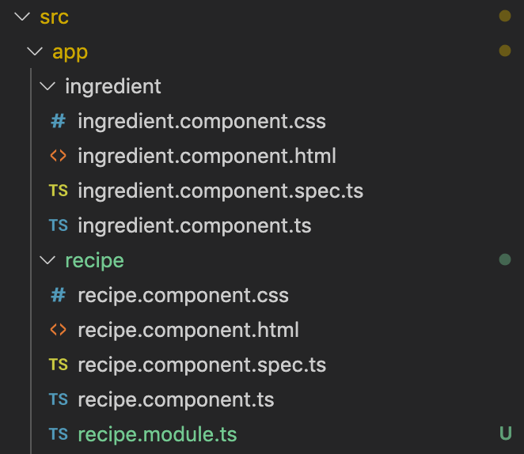

recipe app startpoint

~$ git clone https://github.com/Pieter-hogent/recipeapp.git (or git pull) ~$ cd recipeapp ~/recipeapp$ npm install ~/recipeapp$ git checkout -b mybranch aa93285
modules.
src/app/app.module.ts
import { BrowserModule } from '@angular/platform-browser';
import { NgModule } from '@angular/core';
import { AppComponent } from './app.component';
import { RecipeComponent } from './recipe/recipe.component';
import { IngredientComponent } from './ingredient/ingredient.component';
@NgModule({
declarations: [AppComponent, RecipeComponent, IngredientComponent],
imports: [BrowserModule],
providers: [],
bootstrap: [AppComponent]
})
export class AppModule {}
last week we used the
angular-cli to generate a few
components
these consist of a few files (html, css, typescript) which we
could use immediately in our other components
the reason this worked is because
angular-cli added those files to our
app.module as well
every angular application always has an app.module
it says which component should be rendered when the user surfs
to the root of our webapp
(and that AppComponent will contain
the tags of our other components to render them, and so
on)
you can imagine that large apps consists of many
components
to make re-use easier angular allows you to create your own
modules, and import those
let's do that for our Recipe- and
IngredientComponent
RecipeModule.
~/recipapp$ ng generate module recipe --module=app
- You can use ng generate for modules as well
- --module=app makes sure this recipe module is imported in the app module
RecipeModule.

- the cli created the recipe.module.ts file in our (already existing) recipe/ folder
- it would be nicer if both the ingredient component as the recipe component their files would be in subfolders of this module, so let's do that first
RecipeModule.
~/recipapp$ cd src/app ~/recipapp/src/app$ mkdir recipe/recipe ~/recipapp/src/app$ git mv recipe/recipe.component* recipe/recipe ~/recipapp/src/app$ git mv ingredient recipe/
- first we'll create a recipe folder inside the existing recipe folder
- next we'll move all recipe component files to that folder
- it's always best to use git mv when moving files under git control (it's a shorthand for moving a file / removing the old one / adding the new one)
- lastly, we'll move the ingredient folder inside this recipe folder as well
RecipeModule.
src/app/app.module.ts
import { BrowserModule } from '@angular/platform-browser';
import { NgModule } from '@angular/core';
import { AppComponent } from './app.component';
import { RecipeComponent } from './recipe/recipe.component';
import { IngredientComponent } from './ingredient/ingredient.component';
@NgModule({
declarations: [AppComponent, RecipeComponent, IngredientComponent],
imports: [BrowserModule, RecipeModule],
providers: [],
bootstrap: [AppComponent]
})
export class AppModule {}
if you open app.module.ts, you'll see squiggly red lines where
we're importing the components
we moved them, they can no longer be found at there original
spot
we want to declare them in our recipe module though, so let's
remove the imports here
and remove from declarations as
well
that's it, now let's add them again in the
recipe.module.ts
RecipeModule.
src/app/recipe/recipe.module.ts
import { IngredientComponent } from './ingredient/ingredient.component';
import { RecipeComponent } from './recipe/recipe.component';
import { NgModule } from '@angular/core';
import { CommonModule } from '@angular/common';
@NgModule({
declarations: [RecipeComponent, IngredientComponent],
imports: [CommonModule],
exports: [RecipeComponent]
})
export class RecipeModule {}
b6df265
here we simply add both components to the declarations again
this should add the imports automatically as well, but check to
make sure they already point at the new locations
(sometimes you get weird caching here and vs code still uses
the old path)
if you would open the webapp now, you would still get an error
indicating RecipeComponent is not found
when importing a module, you only import what the module
exports, so we need to export the RecipeComponent here so the
AppComponent can use it
modules.
- every component must be declared in exactly one module
- you need to declare or import every component you want to use
- importing a module imports all components that module exports (all declared but not exported components can only be used inside that module)
- there's more to modules (lazy loading / preloading / ...) but we'll talk about that in a later chapter
style.
- next, let's talk about styling our app, this is not a design class, and nobody likes to write (or debug) css, so we'll use one of the many frameworks to make our lives easier: angular material, together with flexbox
- Material design was created by Google in 2014, it's widely used on Android, but as of Angular 5, there is a good angular port as well
- there are many others we could have chosen: bootstrap, semantic ui, etc.
- or write our own css, it's still a webpage, we're not really limited in this regard
angular material.
~/recipeapp$ npm install --save @angular/material @angular/cdk @angular/animations @angular/flex-layout
- first we need to add the modules to our application
- the --save when doing an npm install adds it to our package.json as well, so that teammembers will get the right libraries when they git pull our code
angular material.
src/app/material/material.module.ts
import { NgModule } from '@angular/core';
import { CommonModule } from '@angular/common';
import { BrowserAnimationsModule } from '@angular/platform-browser/animations';
import { MatListModule } from '@angular/material/list';
import { MatIconModule } from '@angular/material/icon';
import { MatCardModule } from '@angular/material/card';
import { FlexLayoutModule } from '@angular/flex-layout';
@NgModule({
declarations: [],
imports: [
CommonModule,
BrowserAnimationsModule,
FlexLayoutModule,
MatListModule,
MatCardModule,
MatIconModule
],
exports: [
BrowserAnimationsModule,
FlexLayoutModule,
MatListModule,
MatCardModule,
MatIconModule
]
})
export class MaterialModule {}
we'll create a separate module to group everyting from material
design
create it using the angular cli just like we did before with the
recipe module
we'll import all modules we installed from material design
and then we export them again so they are available to modules
importing our material module
for this small recipe web app, this might look a bit silly
but when you have larger apps with many modules it pays to keep
this cleanly separated
angular material.
src/app/recipe/recipe.module.ts
import { MaterialModule } from './../material/material.module';
import { IngredientComponent } from './ingredient/ingredient.component';
import { RecipeComponent } from './recipe/recipe.component';
import { NgModule } from '@angular/core';
import { CommonModule } from '@angular/common';
@NgModule({
declarations: [RecipeComponent, IngredientComponent],
imports: [CommonModule, MaterialModule],
exports: [RecipeComponent]
})
export class RecipeModule {}
5005567
if you generated the material module using the --module command
line option the AppModule already imports this
but we want to use it in the recipe module as well, so import
here too
by importing all the material modules a lot of new tags and
attributes are provided which we can use in the html of our
components
angular material.
- angular material can be used with different styles, defined in their own css files
- this poses a bit of a problem, we said that every component its css is scoped (that's a feature)
- but that also implies we would have to add our theme-css file to every component we create
- luckily, angular provides us with a global style.css, which is included in every html we define
style.css
src/styles.css
@import '~@angular/material/prebuilt-themes/indigo-pink.css';
by default, this is an empty file
we'll simply add one of the default angular material themes
here: the pink one, everybody loves pink!
material icons
- material design provides a large set of icons, which can be used inside buttons, etc.
- these are actually defined inside a custom font, so if you want to use these (we do), we'll have to include the font in our index.html
src/index.html
<head>
<!-- [...] -->
<link
href="https://fonts.googleapis.com/icon?family=Material+Icons"
rel="stylesheet"
/>
</head>
angular material
src/app/recipe/recipe/recipe.component.html
<mat-card>
<mat-card-header>
<mat-card-title><mat-icon>local_dining</mat-icon> <p>recipe for {{ name }} </mat-card-title>
<mat-card-subtitle>added on {{ dateAdded | date: longDate }}</mat-card-subtitle> </p>
</mat-card-header>
<mat-card-content>
<h3 mat-subheader>ingredients</h3>
<mat-listul>
<mat-list-itemli *ngFor="let ingredient of ingredients">
<app-ingredient [name]="ingredient"></app-ingredient>
</mat-list-itemli>
</mat-listul>
</mat-card-content>
</mat-card>
9e91f87
all is set, let's adapt the html of our recipe component to use
these material design elements
first let's put everything in a basic card, with a card header
and card content
next we'll change the list,
ul becomes
mat-list etc.
then we'll change the header a bit, use proper title tags
finally we'll add an icon to our card
that's it,
let's have a look
refactor existing code.
right now our recipe component is hardcoded to always show
'spaghetti', we need to make some changes before we can cope with
adding new recipes:
- we need a way to represent our recipes: a model class
- our component needs to be updated to get a recipe as an Input of this model i.s.o. being hardcoded
- we'll add a mock data object to hold some recipes (these will come from a proper backend in a later chapter)
- then we need a new "recipe list" component, which will create and show recipe components for all the recipes
model.
src/app/recipe/recipe.model.ts
interface RecipeJson {
name: string;
ingredients: string[];
dateAdded: string;
}
export class Recipe {
constructor(
private _name: string,
private _ingredients = new Array<string>(),
private _dateAdded = new Date()
) {}
static fromJSON(json: RecipeJson): Recipe {
const rec = new Recipe(json.name, json.ingredients, new Date(json.dateAdded));
return rec;
}
// [...] other getters
get name(): string {
return this._name;
}
addIngredient(name: string, amount?: number, unit?: string) {
this._ingredients.push(`${amount || 1} ${unit || ''} ${name}`);
}
}
our model class is just a class with some private members and
getters
our backend server will return JSON objects, so lets add a
convenience method to convert those
you can always use any, but if you want 'type' your json
creating a small interface is the most convenient way
dates will be stringified, so we'll convert them as we create
our Recipe object
mock data object
src/app/recipe/mock-recipes.ts
import { Recipe } from './recipe.model';
const JsonRecipes = [
{
name: 'spaghetti',
ingredients: ['tomato', 'onion', 'celery', 'carrot', 'minced meat'],
dateAdded: '2020-02-07T18:25:43.511Z'
},
{
name: 'risotto',
ingredients: ['rice', 'onion', 'parmesan', 'butter'],
dateAdded: '2020-02-08T16:25:43.511Z'
}
];
export const RECIPES: Recipe[] = JsonRecipes.map(Recipe.fromJSON);
we'll create a separate file which can hold a list of such
recipes to have some initial data
import the model definition
create some json representation of our recipe model
and finally map them to our class type using the convenience
method we added previously
recipe component
src/app/recipe/recipe.component.ts
export class RecipeComponent implements OnInit {
name: string;
ingredients: string[];
dateAdded: Date;
@Input() public recipe: Recipe;
constructor() {
this.name = 'spaghetti';
this.ingredients = ['tomato', 'onion', 'celery', 'carrot', 'minced meat'];
this.dateAdded = new Date();
}
ngOnInit() {}
}
everything was hardcoded here, let's throw that out
and replace them with a recipe object
we don't want to initialize this in the constructor but let
other components pass the data
@Input() properties should be
public
semantically correct, and important for AOT compiling
recipe component
src/app/recipe/recipe.component.html
<mat-card>
<mat-card-header>
<mat-card-title>
<mat-icon>local_dining</mat-icon> {{ recipe.name }}</mat-card-title
>
<mat-card-subtitle
>added on {{ recipe.dateAdded | date: longDate }}</mat-card-subtitle
>
</mat-card-header>
<mat-card-content>
<h3 mat-subheader>ingredients</h3>
<mat-list>
<mat-list-item *ngFor="let ingredient of recipe.ingredients">{{
ingredient
}}</mat-list-item>
</mat-list>
</mat-card-content>
</mat-card>
we need to adapt the html as well
name,
ingredients nor
dateAdded exist in our updated class
we access them through our recipe property now
recipe list component.
- we'll create a new component to hold all the recipes and to display a recipe component for each
~/recipeapp$ cd src/app/recipe ~/recipeapp/src/app/recipe$ ng g c recipe-list --module=recipe --dry-run ~/recipeapp/src/app/recipe$ ng g c recipe-list --module=recipe
recipe list component.
src/app/recipe/recipe-list/recipe-list.component.ts
import { RECIPES } from './mock-recipes';
export class RecipeListComponent {
private _recipes = RECIPES;
constructor() {}
get recipes() {
return this._recipes;
}
}
inside the recipe list component we'll access our mock data and
provide a getter which the html can use to loop over all
recipes
recipe list component.
src/app/recipe/recipe-list/recipe-list.component.html
<div
fxLayout="row wrap"
fxLayout.xs="column"
fxLayoutGap="0.5%"
fxLayoutAlign="start"
>
<div
class="recipe"
*ngFor="let localRecipe of recipes"
fxFlex="0 0 calc(25%-0.5%)"
fxFlex.xs="100%"
>
<app-recipe [recipe]="localRecipe"></app-recipe>
</div>
</div>
in the html we 'll use
*ngFor to loop over the recipes
we first wrap the recipe in a
angular/flex-layout div
this is a convenient wrapper of CSS3 flexbox, if you have no
idea what this is about,
spent 5 minutes reading
and another 10 minutes reading about
css grid
while you're at it
it makes it easy to create responsive 'flows', here we'll use
'row' layout unless on very small screens, many more options are
available
then we loop over our recipes and pass them one by one to the
@Input of our recipe component
notice that we put the *ngFor
inside the tag we want to see repeated
we want to repeat the div inside the flexbox, not the flexbox
itself
recipe module
src/app/recipe/recipe.module.ts
import { MaterialModule } from './../material/material.module';
import { IngredientComponent } from './ingredient/ingredient.component';
import { RecipeComponent } from './recipe/recipe.component';
import { NgModule } from '@angular/core';
import { CommonModule } from '@angular/common';
import { RecipeListComponent } from './recipe-list/recipe-list.component';
@NgModule({
declarations: [RecipeComponent, IngredientComponent, RecipeListComponent],
imports: [CommonModule, MaterialModule],
exports: [RecipeComponentRecipeListComponent]
})
export class RecipeModule {}
the recipe list component was automatically added to the
declarations when we created the component because of the
--moduule=recipe option we provided
we still need to take care of exporting though, we want users
of our module to use the recipe list to show all recipes
app component
src/app/app.component.html
<div style="text-align:center">
<h1>welcome to {{ title }}</h1>
</div>
<div>
<app-recipe></app-recipe>
<app-recipe-list></app-recipe-list>
</div>
9bb3c80
now all that's left is adapting the html of app component to use
this new recipe list component
so replace the app-recipe tag with an app-recipe-list tag
that's it
let's check that this still works
linking components
- we learned how to pass data between components and their html (using {{}})
- we also saw how to pass data from one component to its child component (using [ ] )
- now we're going to learn a way to pass data from a child component to its parent
- and how to respond to actions from the user (clicks)
add recipe component
src/app/recipe/add-recipe/add-recipe.component.html
<mat-card>
<mat-form-field>
<input matInput placeholder="name" type="text"
#newrecipename />
</mat-form-field>
<button (click)="addRecipe(newrecipename)" mat-raised-button>
add recipe
</button>
</mat-card>
let's add a (very basic) add recipe component, with only a input
field for the name, and an add button
(we'll convert this into a proper form in a later class)
from now on, the slides will no longer show everything
excrutiatingly detailed if it covers something we already saw,
like in this case, creating a new component
let's do this
we want to respond to the button being clicked
this is done using an eventhandler, between
( )
when the button is clicked, we want to process what is inside
the input field
we do this by populating a template variable for the input
field, using this 'hashtag' syntax
now we add the function being called on our typescript class
when the event fires, with this variable as a parameter
the newrecipename is a local variable
@Output()
src/app/recipe/add-recipe/add-recipe.component.ts
import { Component, OnInit, Output, EventEmitter } from '@angular/core';
import { Recipe } from '../recipe.model';
export class AddRecipeComponent implements OnInit {
@Output() public newRecipe = new EventEmitter<Recipe>();
constructor() {}
ngOnInit() {}
addRecipe(recipeName: HTMLInputElement): boolean {
const recipe = new Recipe(recipeName.value, []);
this.newRecipe.emit(recipe);
console.log(recipeName.value);
return false;
}
}
21a08c3
we're referencing the
addRecipe function, so we need to
add it to our code
"hashtag fields" are basic DOM HTMLElements (HTMlInputElement
here, since it's an <input> tag)
use .value to access to contents
event handlers return a boolean, true if you want to propagate
the event to other handlers, false to "eat" the event
let's add the component to the recipe list and
try this out
when the addRecipe is triggered by
clicking the button, we'd like this recipe to end up in our list
of recipes and show up in the grid
to be able to communicate with a component that contains us, we
need an @Output variable, of type
EventEmitter
we don't (and shouldn't) know who contains us, so we're limited
to simply sending something 'out there', to anyone who cares to
listen
don't forget all necessary imports
when the button is clicked, we'll emit a new event, with the new
created recipe
notice that our EventEmitter sends
objects of the type Recipe, so we
simply emit the recipe, not wrapped into some event class
the html doesn't change, we already called the
addRecipe when the add button was
clicked
receive the event
src/app/recipe/recipe-list/recipe-list.component.html
<div fxLayout="column" fxLayoutGap="2%">
<app-add-recipe (newRecipe)="addNewRecipe($event)"></app-add-recipe>
<div
fxLayout="row wrap"
fxLayout.xs="column"
fxLayoutGap="0.5%"
fxLayoutAlign="start"
>
<div
class="recipe"
*ngFor="let localRecipe of recipes"
fxFlex="0 0 calc(25%-0.5%)"
fxFlex.xs="100%"
>
<app-recipe [recipe]="localRecipe"></app-recipe>
</div>
</div>
</div>
the event is sent, but nobody's listening, let's change
that
first, we'll add the
app-add-recipe component to our
recipe list component (inside another flexbox div)
then we want to listen to the Output / event of this
component
this event works just like system events
a click of a
<button>, or a
newRecipe of an
<app-add-recipe>, they're just
the same
so add an eventhandler (using ( ))
to the tag/component sending the event
receive the event
src/app/recipe/recipe-list/recipe-list.component.ts
export class RecipeListComponent implements OnInit {
private _recipes = RECIPES;
constructor() {}
get recipes() {
return this._recipes;
}
addNewRecipe(recipe: Recipe) {
this._recipes.push(recipe);
}
7557a1d
now we still need to add this event handler to our class
so we add an addNewRecipe method,
which will push the new recipe to our list of recipes
notice that the $event parameter is
simply an object of type Recipe, as
that's what we were sending
let's try this out
status
- we can add recipes now, or at least simply the name of a new recipe
- while you could expand this into a fully functioning form, there are FAR better ways to handle forms! (we'll cover that in a later chapter)
- still, while we can add recipes now, data is stored in the app component, it shouldn't be in a component at all
- we need a new concept, a class which performs functionality across components
services
- services typically serve one of these goals
- encapsulate business logic needed throughout your app
- providing data access to different components
- you use services to share code / data across components, so obviously you don't want to simply instantiate local copies in each component
- you use injection to add them to components, and 'share' your copy
services
we'll use angular-cli to generate our service
~/recipeapp/src/app/recipe$ ng generate service RecipeData
CREATE src/app/recipe/recipe-data.service.spec.ts (354 bytes) CREATE src/app/recipe/recipe-data.service.ts (159 bytes)
note that no html nor css is created, a service is not something
that will be shown
services
src/app/recipe-data.service.ts
import { Injectable } from '@angular/core';
@Injectable({
providedIn: 'root'
})
export class RecipeDataService {
constructor() { }
}
not much here, a class with a decorator
services are always @Injectable,
you never create ('new') one yourself, they are always added
using dependency injection
you've seen this before, but basically when first needed the
Angular framework will create a singleton instance of this class
and pass it
then any subsequent request for this service in the same
'scope' will use the same object
services need to be provided by a module (their 'scope'),
that's what the providedIn is for,
we'll see modules in depth in a later chapter
providedIn is new in Angular6, on
stackoverflow etc you'll often find services being provided
inside the providers list of the module, this still works, but
the new shiny way is to use
providedIn
recipedataservice
src/app/recipe-data.service.ts
@Injectable({
providedIn: 'root'
})
export class RecipeDataService {
private _recipes = RECIPES;
constructor() {}
get recipes(): Recipe[] {
return this._recipes;
}
addNewRecipe(recipe: Recipe) {
this._recipes.push(recipe);
}
}
first we move the list of recipes, initialized with the mock
data, from the recipe list component to this service
recipe list component
src/app/recipe/recipe-list/recipe-list.component.ts
export class RecipeListComponent{
constructor(private _recipeDataService: RecipeDataService) {}
get recipes(): Recipe[] {
return this._recipeDataService.recipes;
}
addNewRecipe(recipe) {
this._recipeDataService.addNewRecipe(recipe);
}
}
f76e8b8
now we update the recipe list component to use this data
service
first we add a parameter of the data service type to the
constructor
this will make sure the DI system is used, if the service is
properly provided somewhere
notice the private before the
parameter; remember, this creates a member variable and
initializes it
the get and
addNewRecipe methods now simply call
their respective methods on the data service directly
notice that the component no longer holds any data itself, this
is very important as components can (and will) be recreated and
reused throughout the use of your app
where services are 'stable' singletons
it's also important since services will be reused across
components
if you add a recipe in one component, you'll typically want
other components to reflect this as well
let's try this out
service
- we succesfully moved our data to a shared service, ready to be used throughout the app
- still, we lose everything after a refresh... we need a backend with a database and the whole shebang, we'll tackle that in later chapter
custom pipe
- last week we talked about pipes to transform how data is displayed
- but you can also use pipes to filter data (in a way this is transforming your array)
- since we can have many recipes now, let's illustrate this by adding a filter to only show recipes matching a certain string
- this is only intended to illustrate custom pipes, in real applications you should (obviously?) never filter on the client side; when you can have an arbitrary amount of recipes you want to paginate and apply filters on the server side, probably in the database (e.g. if you have 100.000 recipes you don't want to send all those MBs to every client and then hide 99.990 of them)
recipe filter
like components and services, we can use the angular-cli to generate pipes
~/recipeapp/src/app/recipe$ ng generate pipe RecipeFilter --module=recipe
CREATE src/app/recipe/recipe-filter.pipe.spec.ts (212 bytes) CREATE src/app/recipe/recipe-filter.pipe.ts (213 bytes) UPDATE src/app/recipe/recipe.module.ts (971 bytes)
just like a service, there's no css or html here, pipes are to be
used inside other components
RecipeFilterPipe
src/app/recipe-filter.pipe.ts
import { Pipe, PipeTransform } from '@angular/core';
@Pipe({
name: 'recipeFilter'
})
export class RecipeFilterPipe implements PipeTransform {
transform(recipes: Recipe[]value: unknown, name: string...args?: unknown): Recipe[]unknown {
return null;
if (!name || name.length === 0) {
return recipes;
}
return recipes.filter(rec =>
rec.name.toLowerCase().startsWith(name.toLowerCase())
);
}
}
pipes are configured using the @Pipe decorator
they have a name, that's how you call them using the pipe
character
| recipeFilter
you must implement the
PipeTransform interface, which
contains one function: transform,
with two parameters
the first parameter is the value to the left of the pipe |, on
which the pipe is applied
the second parameter is optional, an extra parameter for your
pipe (e.g. | date: "longDate")
by default parameters are of type 'unknown'
just like any, everything can be
assigned to an unknown type, but
unline any you can assign an
unknown type to almost nothing
we'll use static type checking to our advantage and change them
into the real types
in our case we will filter a
Recipe[], based on a
string
as an example we'll simply check if the name of the recipe
starts with the string we filter on
so return the full list if no filter is passed, and filter the
array on the name if there is a filter
using the recipefilter
src/app/recipe/recipe-list.component.html
<div fxLayout="column" fxLayoutGap="2%">
<app-add-recipe (newRecipe)="addNewRecipe($event)"></app-add-recipe>
<mat-card>
<mat-form-field>
<input matInput placeholder="filter" type="text" #filter />
</mat-form-field>
<button (click)="applyFilter(filter.value)" mat-raised-button>
filter
</button>
</mat-card>
<div
fxLayout="row wrap"
fxLayout.xs="column"
fxLayoutGap="0.5%"
fxLayoutAlign="start"
>
<div
class="recipe"
*ngFor="let localRecipe of (recipes | recipeFilter: filterRecipeName)"
fxFlex="0 0 calc(25%-0.5%)"
fxFlex.xs="100%"
>
<app-recipe [recipe]="localRecipe"></app-recipe>
</div>
</div>
</div>
we loop over the recipe list in the RecipeListComponent, so
that's where we'll apply the filter
so we want to apply the (filter) pipe to the recipes list
here
the name on which we'll filter will be a property from the
typescript class, let's name it
filterRecipeName
this property will be set using a input field and filter
button
once more, we'll create a local 'hashtag' variable to store
this input field, and pass it's value to the function
all that's left is adding this function and the property to the
typescript code
using the recipefilter
src/app/recipe/recipe-list.component.ts
export class RecipeListComponent {
constructor(private _recipeDataService: RecipeDataService) {}
public filterRecipeName: string;
applyFilter(filter: string) {
this.filterRecipeName = filter;
}
get recipes(): Recipe[] {
return this._recipeDataService.recipes;
}
// [...]
e62e438
the typescript class is pretty straightforward, we simply add a
new property for the filter
and then create the function which will set this property if
the button is clicked
notice that we pass a string now, not a HTMLInputElement, since
I passed the .value in the html)
that's it,
let's try this out
change detection
- so this mostly works, but the filter doesn't get reapplied, what's going on?
- the problem is related to change detection, angular tries to update the DOM as little as possible there's a whole mechanism in place, change detection, to 'know' which parts changed and which didn't
change detection
- Pipe's transform function is considered 'pure', given the same inputs, the exact same output is expected
- while the contents of the recipe[] changed, the variable itself didn't; angular is very conservative when deciding if a pipe triggers a change, pipes are potentially called a lot of times
change detection
-
so how do you solve this? there are two ways, declare the pipe as
not being pure in the properties
src/app/recipe/recipe-filter.pipe.ts
@Pipe({ name: 'recipeFilter', pure: false }) -
or make sure the variable (reference) really changes, clone it and
add the new recipe to the clone
src/app/recipe/recipe-data.service.ts
addNewRecipe(recipe: Recipe) { this._recipes = [...this._recipes, recipe]; }
immutable
- we'll go with the second option, taking a more functional approach (immutable objects / pure functions) is the way to go
- it makes for code that is a lot easier to test and understand; in a way, if you can avoid tracking state you should, but we'll have a LOT more to say about state later
- a filter like this should really be a live-filter though, but we'll fix that in a later chapter using observables
- anyway, let's try this out
summary
- basic actions are handled by enclosing them in parentheses (click)="myClickFunction()"
- you can easily capture data in your html hashtag syntax #inputfield, and pass it to event handlers
- creating data from one component, to be used by another, is achieved using @Output and EventEmitter
- use a service to encapsulate data or logic used by several components using @Injectable